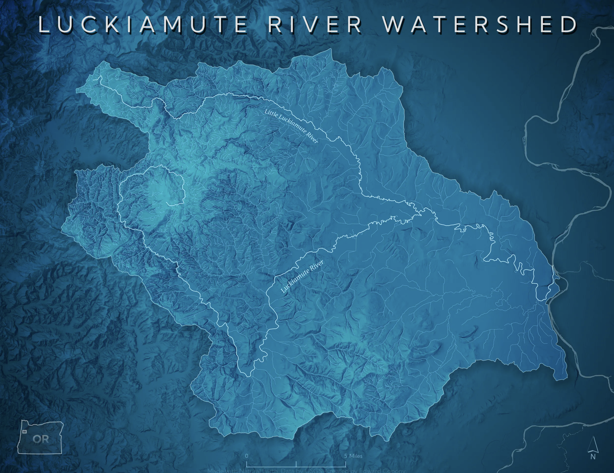
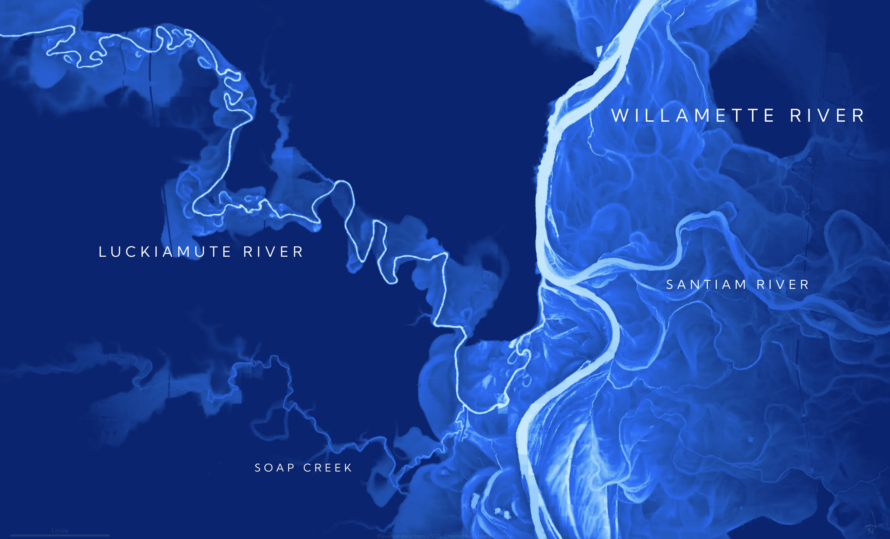
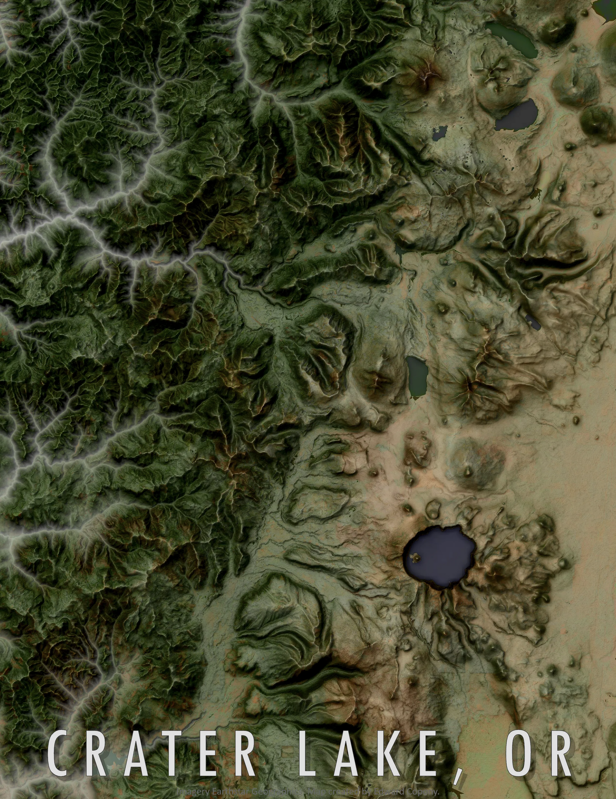
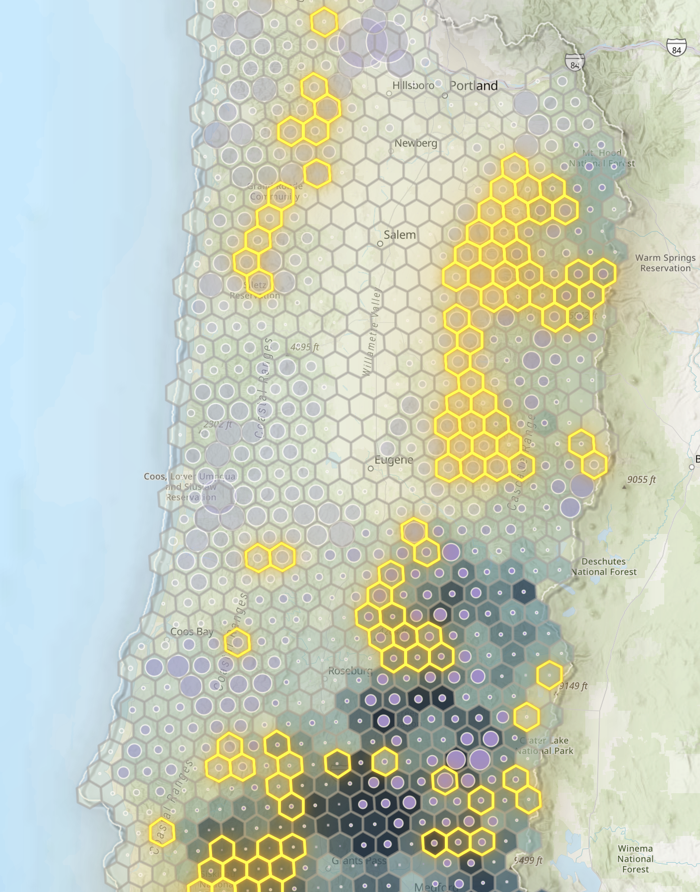
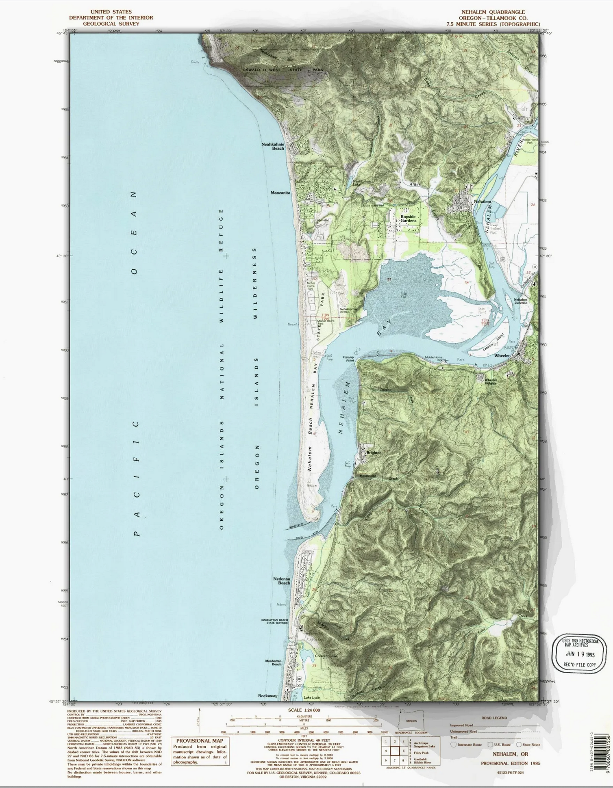
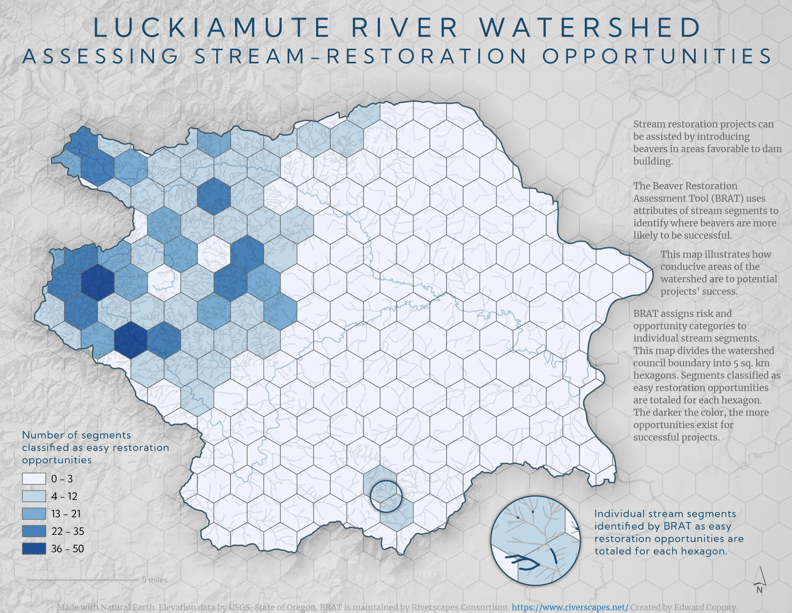
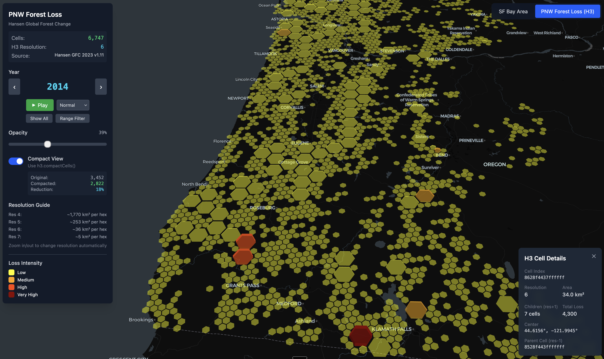

Software Developer & Mapmaker
Building software for 25 years. Making maps because I can't stop.
Software developer based in the Pacific Northwest with a passion for maps, data, and understanding the world through geography.
By day, I build software. By night (and weekends), I create maps. I earned my Master's degree in Geographic Information Science in 2023, and I've been exploring the intersection of code and cartography ever since.
I'm particularly interested in terrain visualization, watershed analysis, and using code to generate beautiful, data-driven maps. I write about my mapping adventures on Medium.
A selection of cartographic work from my ongoing exploration of GIS, terrain visualization, and data-driven mapping.







Leading development of enterprise learning platform. React, TypeScript, Ruby, Python, AWS.
Full-stack development across fintech, enterprise software, and startups.
I write about cartography, GIS techniques, and the intersection of code and maps on Medium.
Exploring Claude Agent SDK and MCP servers for geospatial workflows
Deep dives into watershed analysis, REMs, and restoration planning
Hillshade techniques, ambient occlusion, and beautiful terrain maps
Generating stylized maps programmatically with GeoPandas and Matplotlib